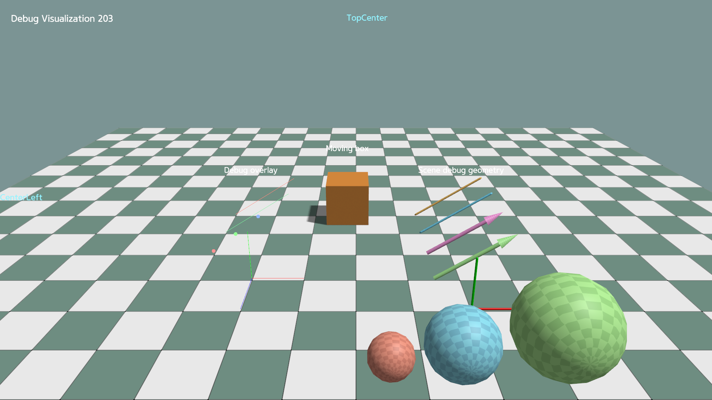

Debug Visualization and Text Rendering¶
KangEngine provides separate helpers for temporary visualization and text:
app.debug_overlaydraws lines, points, and axes without creating scene Prims.app.scene.debug_geometrycreates mesh-based debug objects in the SceneGraph.app.world_textdraws screen-aligned text at a 3D world position.app.screen_textdraws text in viewport pixel coordinates.

Debug overlay¶
Use debug_overlay for lightweight lines, points, and axes that do not create
SceneGraph Prims:
self.debug_overlay.axes(
path="/overlay/axes",
origin=np.array([0.0, 0.0, 0.0]),
rotation=np.eye(3),
length=1.0,
)
Calling the same function with the same path replaces its data. Remove overlay data by path:
self.debug_overlay.clear_lines("/overlay/lines")
self.debug_overlay.clear_points("/overlay/points")
self.debug_overlay.clear("/overlay/axes")
Scene debug geometry¶
scene.debug_geometry creates mesh-based, instanced SceneGraph renderables.
Keep the returned view to update or remove them:
self.debug_spheres = self.scene.debug_geometry.add_spheres(
path="/debug_geometry/spheres",
centers=centers,
radii=radii,
colors=colors,
)
self.debug_spheres.update_spheres(
centers=new_centers,
radii=radii,
colors=colors,
)
self.debug_spheres.remove()
Lines and arrows provide matching update_lines() and update_arrows()
methods.
World-space text¶
Create the entry once, then update only the values that change:
self.world_text.set(
path="/labels/box",
text="Box",
position=ke.vec3(0.0, 1.2, 0.0),
pixel_size=28.0,
)
self.world_text.set_position("/labels/box", new_position)
self.world_text.set_text("/labels/box", "Moving box")
self.world_text.remove("/labels/box")
Set depth_test=False when the label should remain visible through scene
geometry.
Screen-space text¶
position is measured in pixels from the selected anchor. Without an explicit
anchor, it uses TopLeft, so (24, 24) places the text 24 pixels right and
down from the top-left corner:
self.screen_text.set(
path="/status",
text="Ready",
position=ke.vec2(24.0, 24.0),
anchor=ke.render.ScreenAnchor.TopLeft,
)
self.screen_text.set_text("/status", "Running")
self.screen_text.remove("/status")
When alignment is omitted, it follows the anchor column automatically:
left, center, or right. Pass an explicit alignment to override it.
Run the complete example:
python ./python/examples/debug_visualization.py
Complete source: debug_visualization.py
1"""Debug geometry, overlay, and text in one scene."""
2
3import math
4
5import numpy as np
6
7import kangengine as ke
8
9
10class DebugVisualizationApp(ke.App):
11 def setup(self):
12 self.count = 0
13 self.orbit_angle = 0.0
14 materials = self.create_standard_materials()
15 self.scene.add_ground("/ground", scale=20.0)
16
17 self.box = self.scene.add_mesh(
18 "/box",
19 ke.geometry.create_cube_data(1.0),
20 materials.common,
21 color=ke.vec4(0.8, 0.3, 0.05, 1.0),
22 )
23 self.box.set_local_translation(ke.vec3(0.0, 0.5, 0.0))
24
25 # Lightweight overlay: no SceneGraph prims are created.
26 self.debug_overlay.lines(
27 "/overlay/lines",
28 np.array([[-3.0, 0.05, -1.0], [-3.0, 0.05, 0.0]]),
29 np.array([[-1.5, 1.0, -1.0], [-1.5, 1.0, 0.0]]),
30 np.array(
31 [
32 [1.0, 0.25, 0.2, 1.0],
33 [0.2, 0.9, 0.35, 1.0],
34 ]
35 ),
36 width=3.0,
37 )
38 self.debug_overlay.points(
39 "/overlay/points",
40 np.array([[-3.0, 0.1, 1.0], [-2.5, 0.5, 1.0], [-2.0, 0.9, 1.0]]),
41 np.array(
42 [
43 [1.0, 0.3, 0.3, 1.0],
44 [0.3, 1.0, 0.3, 1.0],
45 [0.3, 0.5, 1.0, 1.0],
46 ]
47 ),
48 size=10.0,
49 )
50 self.debug_overlay.axes(
51 "/overlay/axes",
52 origin=np.array([-2.0, 0.05, 2.0]),
53 rotation=np.eye(3),
54 length=1.0,
55 width=3.0,
56 )
57 # Mesh-based debug geometry: visible as ordinary SceneGraph objects.
58 self.scene.debug_geometry.add_lines(
59 "/debug_geometry/lines",
60 np.array([[1.5, 0.05, -1.0], [1.5, 0.05, 0.0]]),
61 np.array([[3.0, 1.0, -1.0], [3.0, 1.0, 0.0]]),
62 np.array(
63 [
64 [1.0, 0.6, 0.15, 1.0],
65 [0.2, 0.75, 1.0, 1.0],
66 ]
67 ),
68 material=materials.debug,
69 radius=0.025,
70 )
71 self.scene.debug_geometry.add_arrows(
72 "/debug_geometry/arrows",
73 np.array([[1.5, 0.05, 1.0], [1.5, 0.05, 2.0]]),
74 np.array([[3.0, 1.0, 1.0], [3.0, 1.0, 2.0]]),
75 np.array(
76 [
77 [0.95, 0.35, 0.75, 1.0],
78 [0.45, 0.95, 0.35, 1.0],
79 ]
80 ),
81 material=materials.debug,
82 radius=0.04,
83 )
84 self.scene.debug_geometry.add_axes(
85 "/debug_geometry/axes",
86 origin=np.array([2.0, 0.05, 3.0]),
87 rotation=np.eye(3),
88 material=materials.debug,
89 length=1.0,
90 radius=0.02,
91 )
92 self.debug_sphere_centers = np.array(
93 [
94 [0.5, 0.4, 4.5],
95 [1.5, 0.6, 4.5],
96 [2.9, 0.8, 4.5],
97 ],
98 dtype=np.float32,
99 )
100 self.debug_sphere_radii = np.array([0.35, 0.55, 0.75])
101 self.debug_sphere_colors = np.array(
102 [
103 [1.0, 0.35, 0.25, 1.0],
104 [0.3, 0.8, 1.0, 1.0],
105 [0.5, 1.0, 0.35, 1.0],
106 ]
107 )
108 self.debug_spheres = self.scene.debug_geometry.add_spheres(
109 "/debug_geometry/spheres",
110 centers=self.debug_sphere_centers,
111 radii=self.debug_sphere_radii,
112 colors=self.debug_sphere_colors,
113 material=materials.debug,
114 )
115
116 self.world_text.set(
117 "/labels/overlay",
118 "Debug overlay",
119 ke.vec3(-2.3, 1.5, 0.0),
120 pixel_size=24.0,
121 depth_test=False,
122 )
123 self.world_text.set(
124 "/labels/geometry",
125 "Scene debug geometry",
126 ke.vec3(2.3, 1.5, 0.0),
127 pixel_size=24.0,
128 )
129 self.world_text.set(
130 "/labels/box",
131 "Moving box",
132 ke.vec3(0.0, 1.7, 0.0),
133 pixel_size=24.0,
134 )
135 self.screen_text.set(
136 "/screen/title",
137 "Debug Visualization {}".format(self.count),
138 ke.vec2(30.0, 30.0),
139 pixel_size=28.0,
140 )
141 self.screen_text.set(
142 "/screen/anchor",
143 "TopCenter",
144 ke.vec2(30.0, 30.0),
145 alignment=ke.render.TextAlignment.Center,
146 anchor=ke.render.ScreenAnchor.TopCenter,
147 color=ke.vec4(0.3, 0.9, 1.0, 1.0),
148 pixel_size=25.0,
149 )
150 self.screen_text.set(
151 "/screen/anchor2",
152 "CenterLeft",
153 ke.vec2(0.0, 0.0),
154 anchor=ke.render.ScreenAnchor.CenterLeft,
155 color=ke.vec4(0.3, 0.9, 1.0, 1.0),
156 pixel_size=25.0,
157 )
158
159 # self.set_camera_view([7.0, -9.0, 6.0], [0.0, 0.0, 0.8])
160
161 def preRender(self):
162 self.orbit_angle = (
163 self.orbit_angle + math.radians(120.0) * self.get_delta_time()
164 ) % (2.0 * math.pi)
165 self.box.set_local_translation(
166 ke.vec3(
167 math.cos(self.orbit_angle),
168 0.5,
169 math.sin(self.orbit_angle),
170 )
171 )
172
173 box_pos = self.box.get_world_translation()
174 box_quat = self.box.get_world_rotation()
175 self.world_text.set_position(
176 "/labels/box",
177 box_pos + box_quat * ke.vec3(0.0, 1.2, 0.0),
178 )
179
180 sphere_centers = self.debug_sphere_centers.copy()
181 sphere_centers[:, 1] += 0.1 * np.sin(
182 self.orbit_angle + np.arange(len(sphere_centers))
183 )
184 self.debug_spheres.update_spheres(
185 sphere_centers,
186 self.debug_sphere_radii,
187 self.debug_sphere_colors,
188 )
189
190 self.screen_text.set_text(
191 "/screen/title",
192 "Debug Visualization {}".format(self.count),
193 )
194 self.count += 1
195
196
197if __name__ == "__main__":
198 app = DebugVisualizationApp()
199 app.initialize(1920, 1080, False, ke.UpAxis.Y)
200 app.start()